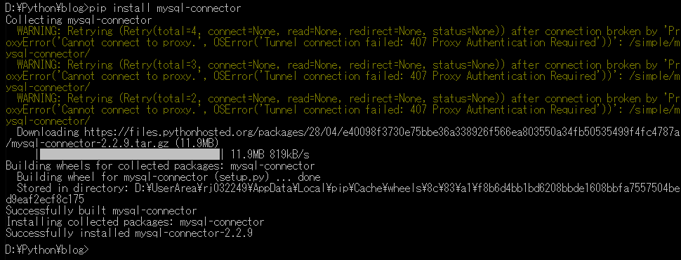
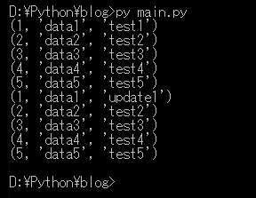

[Python] 21. データベース(mariaDB)を連結する方法
こんにちは。明月です。
この投稿はPythonでデータベース(mariaDB)を連結する方法に関する説明です。
私の場合はPythonをローカルスクリプト言語でよく使います。ローカルスクリプト言語で使うというのはプログラムを開発することや運用する時に一回性で使うプログラムスクリプトということです。
ただ、一回性だけではなく、スケジュールで使う時もあるし、batchをかけて問題がある時やトリガーにかけるかアップデータで使えます。
コンパイル言語でもローカルスクリプト言語で使えますが、ソース修正がスクリプトより大変です。(buildが必要から)
その以外にインストールも多いし、ライブラリも多いのでPythonをよく使います。
そのためプログラムを開発すればデータベースに接続する場合が多いですが、簡単な検索などはsql browserなどで処理ができますが、データ検証や様々なsql scriptを管理する時にはローカルスクリプトを利用するばよいです。
データベースの種類はOracleやsql server(ms-sql)、postgreなど多いですが、私の場合はmariaDBをよく使います。
それでここにはmariaDBの対して例を作成しましょう。
先にpythonでmysqlを使うためにはpipモジュールをインストールしなければならないです。
pip install mysql-connector

モジュールインストールが完了したらpythonでmaraiDBを接続しましょう。
# mysql connectorを使うためのモジュール宣言
import mysql.connector
# mysql connectionを宣言する。パラメータでhostは接続アドレス、userはID、passwdはパスワード、databaseは接続するデータベースだ。
dbconn = mysql.connector.connect(host="localhost", user="test", passwd="password", database="blogtest")
# データベースのテーブルを検索をする関数
def select(query, bufferd=True):
# グローバルで宣言されているconnection持ち込む。
global dbconn
# カーソルを取得する。(bufferdは内部の検索バッファを使う。(connectionリソースのため、)
# 検索されている値はメモリに置いて再要請がある場合、データベースにまた検索せずにメモリの値が返却する。特に大量ページングを使う場合にパフォーマンスがよい。
cursor = dbconn.cursor(buffered=bufferd)
# クエリを実行
cursor.execute(query)
# 検索結果を確認するためにカーソルを返却するべきだ。
# cursor.fetchall()の関数で結果をリストタイプに返却が可能。
# でも、結果が大量の場合、fetchallの大量値が生成されるのでパフォーマンスが遅い。
return cursor
# DML(Data Manipulation Language)のinsert、update、deleteを処理する関数
def merge(query, values, bufferd=True):
# グローバルで宣言されているconnectionを持ち込む。
global dbconn
try:
# カーソルを取得する。
cursor = dbconn.cursor(buffered=bufferd)
# クエリを実行する。valuesはqueryの値にあるsql query式にバインディングする値。
# 文字列のフォーマッティングで設定する。valuesはタプル値で入力する。
cursor.execute(query, values)
# クエリをコミットする。
dbconn.commit()
except Exception as e:
# エラーが発生すればクエリをロールバックする。
dbconn.rollback()
raise e
# DML(Data Manipulation Language)のinsert、update、deleteを大量処理する関数。
def merge_bulk(query, values, bufferd=True):
# グローバルで宣言されているconnectionを持ち込む。
global dbconn
try:
# カーソルを取得する。
cursor = dbconn.cursor(buffered=bufferd)
# クエリを実行する。valuesはqueryの値にあるsql query式にバインディングする値。
# 文字列のフォーマッティングで設定する。valuesはタプル値で入力する。
cursor.executemany(query, values)
# クエリをコミットする。
dbconn.commit()
except Exception as e:
# エラーが発生すればクエリをロールバックする。
dbconn.rollback()
raise e
# DML以外のクエリを実行する関数。
def execute(query, bufferd=True):
# グローバルで宣言されているconnectionを持ち込む。
global dbconn
try:
# カーソルを取得する。
cursor = dbconn.cursor(buffered=bufferd)
# クエリを実行する。
cursor.execute(query)
# クエリをコミットする。
dbconn.commit()
except Exception as e:
# エラーが発生すればクエリをロールバックする。
dbconn.rollback()
raise e
try:
# テーブルPythonTableを削除する。(以前、実行してテーブルがあればテーブルを削除して開始する。そうではなければCREATEエラーが発生する。)
# execute("DROP TABLE PythonTable");
# テーブルPythonTableを生成する。
execute("""
CREATE TABLE PythonTable (
idx int auto_increment primary key,
data1 varchar(255),
data2 varchar(255)
)
""")
# テーブル値を大量insertするためのリストタプル値
values = [('data1', 'test1'),
('data2', 'test2'),
('data3', 'test3'),
('data4', 'test4'),
('data5', 'test5')]
# データを大量入力する。
merge_bulk("INSERT INTO PythonTable (data1, data2) VALUES (%s, %s)", values)
# PythonTableを出力する。
for row in select("SELECT * FROM PythonTable"):
# レコード別でコンソール出力
print(row)
# data1のデータ値をupdate1で修正
merge("UPDATE PythonTable set data2=%s where data1=%s", ('update1','data1'))
# PythonTableを出力する。
for row in select("SELECT * FROM PythonTable"):
# レコード別でコンソール出力
print(row)
# テーブルPythonTableを削除する。
execute("DROP TABLE PythonTable")
except Exception as e:
# エラーが発生した場合、コンソール出力する。
print(e)
finally:
# connectionは必ずリソースを閉める。
dbconn.close()

上の例でテーブル追加からデータ入力、修正、削除そしてテーブル削除まで処理するスクリプトを一列で作成しました。
先、dbconnというmysqlコネクションを生成して受け取ります。pythonはスクリプトなのでプログラム実行が終わると自動にリソースを閉めますが、明確にするためソースの最後にclose関数でリソースを閉めて返却する処理式を作成します。
そしてexecuteを実行するとforの繰り返しでデータセットを受け取ります。execute関数でクエリを実行することもできるし二つのパラメータでクエリバインディングもできます。
executemany関数の場合は大量処理も可能です。fetchall関数を使えば一つのfetchデータではなくすべてのデータを受け取ることもできます。コンプリヘンションでデータソートが可能です。
でも、すべてのデータがメモリにあることなので、パフォーマンスが遅くなります。
link - https://dev.mysql.com/doc/connector-python/en/connector-python-tutorial-cursorbuffered.html
link - https://dev.mysql.com/doc/connector-python/en/connector-python-api-mysqlcursorbuffered.html
ここまでPythonでデータベース(mariaDB)を連結する方法に関する説明でした。
ご不明なところや間違いところがあればコメントしてください。
- [Python] 21. データベース(mariaDB)を連結する方法2020/06/24 18:51:50
- [Python] 20. stringフォマード(Formatting)と補間法(interpolation)2020/06/23 19:03:21
- [Python] 19. 非同期IOのasync/await(asyncio)を使う方法2020/06/22 18:10:12
- [Python] 18. ネットワーク(Socket)通信する方法2020/06/18 19:53:56
- [Python] 17. スレッド(Thread)とロック(lock)、そしてデッドロック(deadlock)2020/06/18 00:19:45
- [Python] 16. IO(ファイル読み取り、書き込み)を扱う方法2020/06/16 18:37:00
- [Python] 15. クラスを継承する方法2020/06/15 18:20:07
- [Python] 14. クラスプロパティ(Property)2020/06/12 17:45:13
- [C#] 54. Reflection機能を使い方 - Attribute2021/10/20 19:29:31
- [Project design] プログラム制作(コーディング) - クラス作成方法2021/10/20 19:28:09
- [C#] 53. Reflection機能を使い方 - Propertyとevent2021/10/19 21:02:58
- [Project design] プログラム制作(コーディング) - 関数作成方法2021/10/19 21:01:32
- [CentOs] ジェンキンス(Jenkins)をインストールする方法2021/10/18 18:28:58
- [Project design] 詳細設計(インターフェース設計と抽象化作業)2021/10/18 18:23:15
- [Project design] 基本設計(画面設計とDB設計)2021/10/17 21:21:11
- [Design pattern] 1-4. デザインパターンの抽象ファクトリーパターン(Abstract factory pattern)2021/10/15 19:31:03
- [Project design] 要件定義(要求事項整理)2021/10/15 19:28:58
- [C#] 52. Reflection機能を使い方 - Variable2021/10/15 19:27:37
- [Project design] プロジェクトを工程(ウォーターフォール vs アジャイル)2021/10/14 18:36:04
- [C#] 51. Reflection機能を使い方 - Method2021/10/14 18:34:21
- [C#] 50. Reflection機能を使い方 - Class2021/10/13 18:34:13
- [C#] 49. Operator(演算子)のオーバーロードを使い方2021/10/12 18:28:42
- [C#] 48. IEnumerableとIEnumerator、そしてyieldキーワード2021/10/11 19:49:33